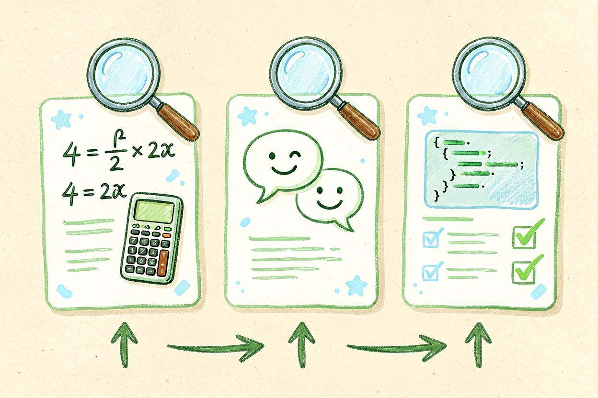
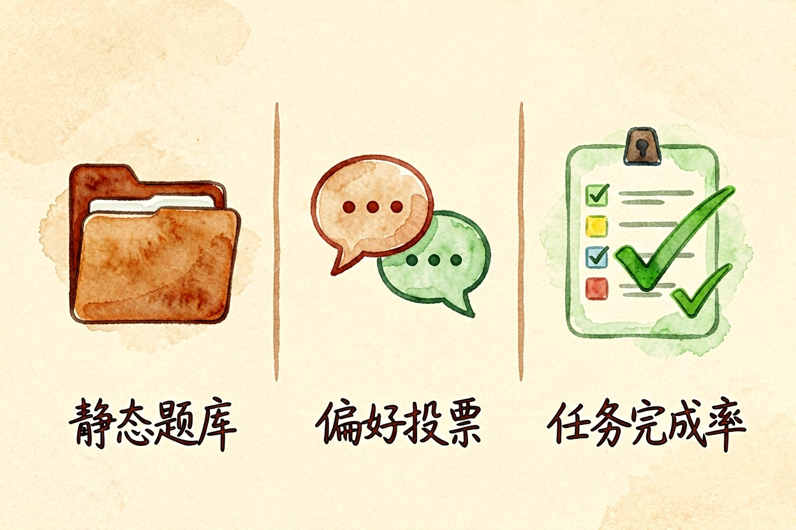
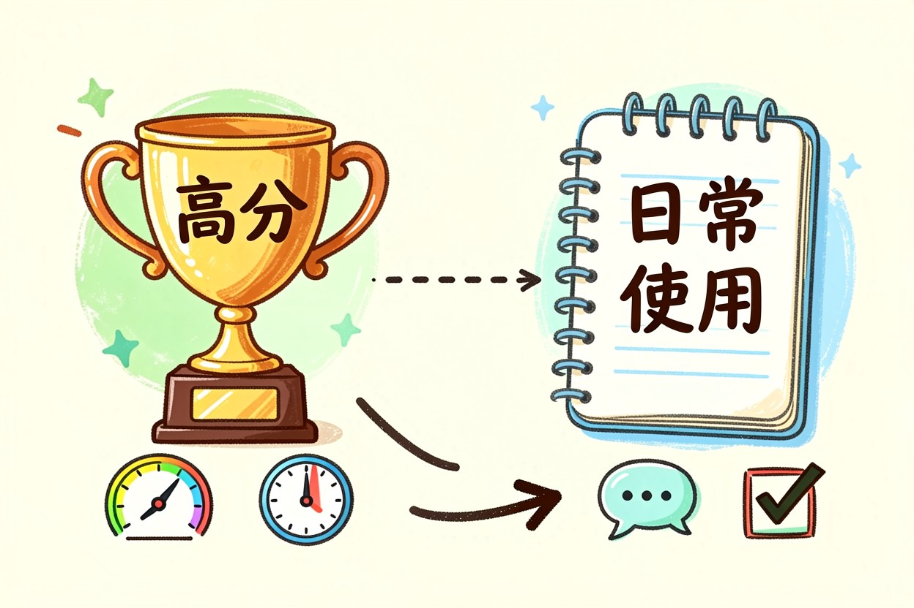
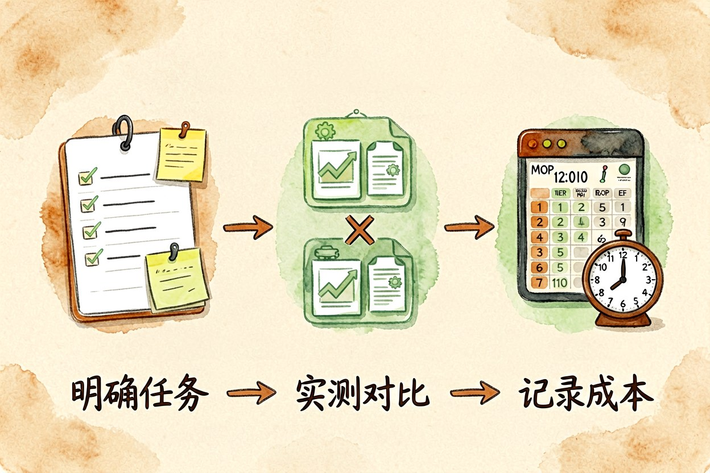
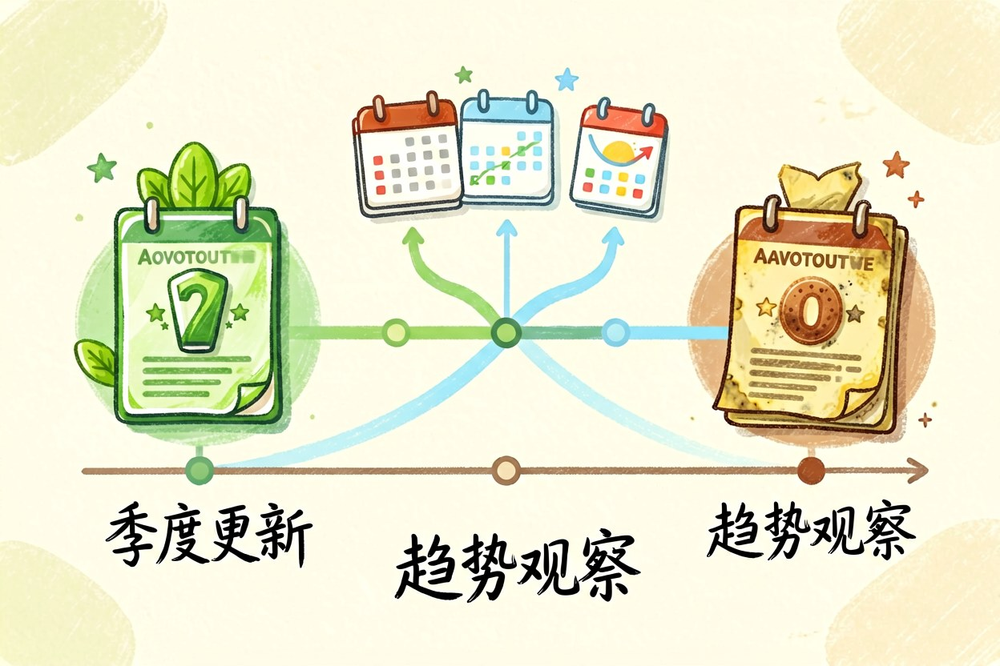

AI 模型排行榜怎么看：跑分之外的三件事
榜单第一名和最好用的工具，经常不是同一个。差别出在分数怎么算，以及你要解决的到底是哪类问题。
AI模型排行榜每周都在更新，名次换来换去，但很多人照着榜首选完之后发现并不顺手。原因很简单：榜单测的是模型在标准化题目上的表现，而你要解决的是自己手头那堆杂乱任务。
AI模型排行榜到底在排什么

绝大多数榜单的本质，是拿一批固定题目喂给各个模型，比对答案的准确率或者人类偏好投票，再折算成分数。题目的来源和权重决定了名次。偏数学推理的榜单会重仓计算题，偏对话体验的榜单会更看重人打分。同一个模型在两个榜上差出十几名，是常态。所以看到名次之前，先看它考什么，这一步能过滤掉一半的误读。
二、三种榜单的计分方式不一样

常见的有三类。第一类是静态题库，题目固定、分数可复现，缺点是有被训练数据覆盖的风险。第二类是两两对战的偏好投票，更接近真实感受，但投票人群的构成会明显影响结果。第三类是任务完成率，比如能否写出通过测试的代码，最接近实际生产，样本量通常偏小。三类混着看，比只盯一个总排名靠谱。单看任何一类，都容易被它自己的偏差带着走。
use_case = {
"长文归档": "看单次可读长度与引用准确度",
"代码修改": "看多轮改动的稳定性",
"日常问答": "看响应速度与中文表达",
"结构化输出": "看格式是否长期稳定",
}三、跑分高不等于用起来顺手

差距往往出在题外。响应速度、长对话里是否跑题、格式能不能稳定输出，这些在跑分里的权重很低，却决定了你每天用着舒不舒服。另一个常见偏差是版本命名混乱，同一个名字底下可能挂着好几个不同参数的版本，社区讨论时说的未必是同一个东西。看分之前先确认版本号和时间，这一步能省掉很多无谓的争论。分高不等于顺手。
四、看榜单可以照做的三个动作

第一，先写下自己的任务类型，再去找对应维度的分项得分，不看总分。第二，把候选缩到两三个，用自己的真实材料各试一遍，同一个提示词跑三次，看稳定性而不是看最好那次。第三，记录成本和延迟，同样质量下每小时能跑多少次，才是能落地的指标。这三步做完，选型基本就有答案了，不必再纠结榜单。
五、榜单的保鲜期有多长

主流模型的迭代周期通常在几个月内，一份榜单的有效期很少超过一个季度。更实际的做法是把它当趋势图看：连续几期都排在前面的，说明基本盘稳；只冒头一次又掉下去的，多半是版本红利。与其收藏榜单，不如留意分项维度的长期变化，那才是真正会传导到你日常工作里的差异。
AI模型排行榜的正确用法是当参考，不是当结论。别拿总分替自己做决定，也别因为一次名次下滑就急着换工具，先在你的真实任务里跑一轮，再决定要不要动。榜单每月都会变，能沉淀下来的只有你自己的评测结论。
本文信息核对于 2026-09-14。AI 产品的价格、免费额度与功能变动频繁，实际以各工具官网当前说明为准。